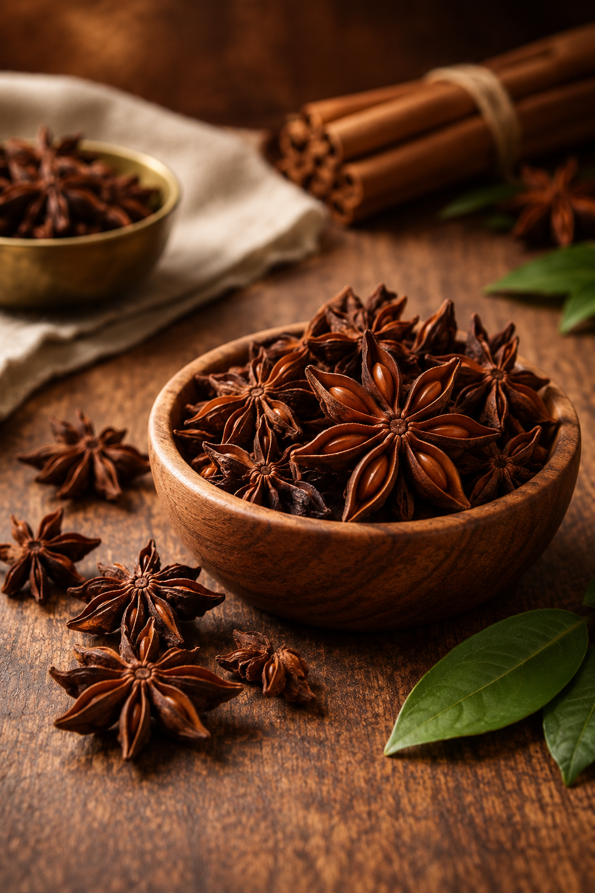

Whole Spice
🌿 Licorice Warmth
Dharoahar Star Anise brings a distinctive licorice-like flavour, natural sweetness and aromatic warmth to everyday cooking. Its characteristic star-shaped pods are valued for their bold aroma and ability to add depth and complexity to a wide range of dishes.
A versatile whole spice, Star Anise works beautifully in traditional Indian preparations as well as Asian-inspired cooking. It can be used during tempering, simmered into gravies and broths, or added to spice blends where its warm, aromatic character complements other spices.
The whole pods are especially useful when a gradual release of flavour is desired during cooking. Whether used in rich curries, aromatic rice preparations, slow-cooked dishes or homemade spice blends, Star Anise adds a distinctive layer of fragrance and warmth.